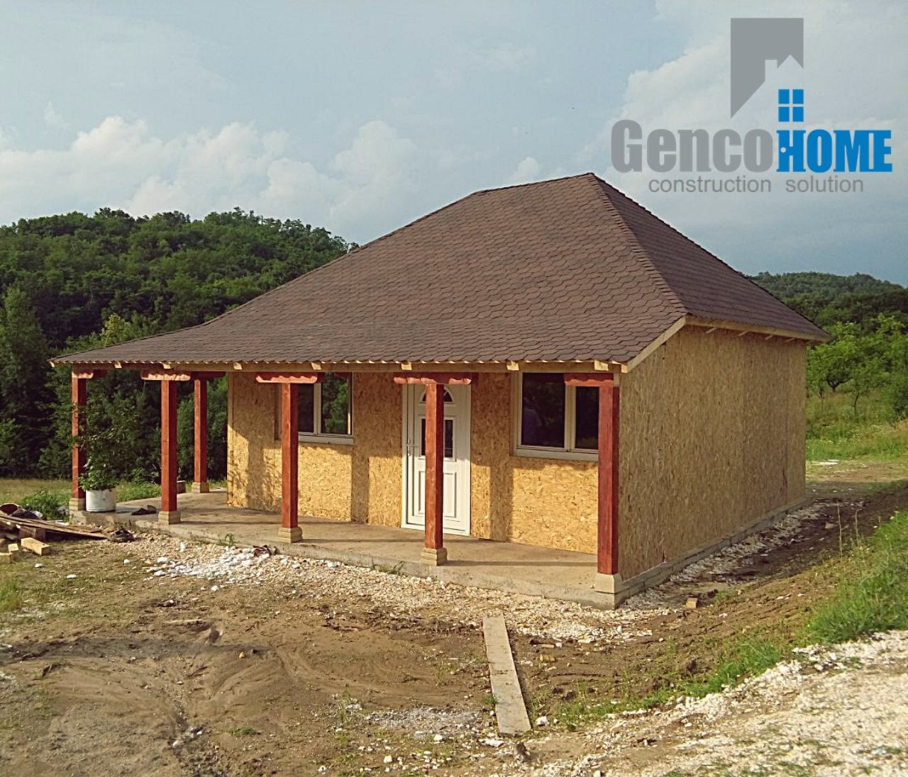
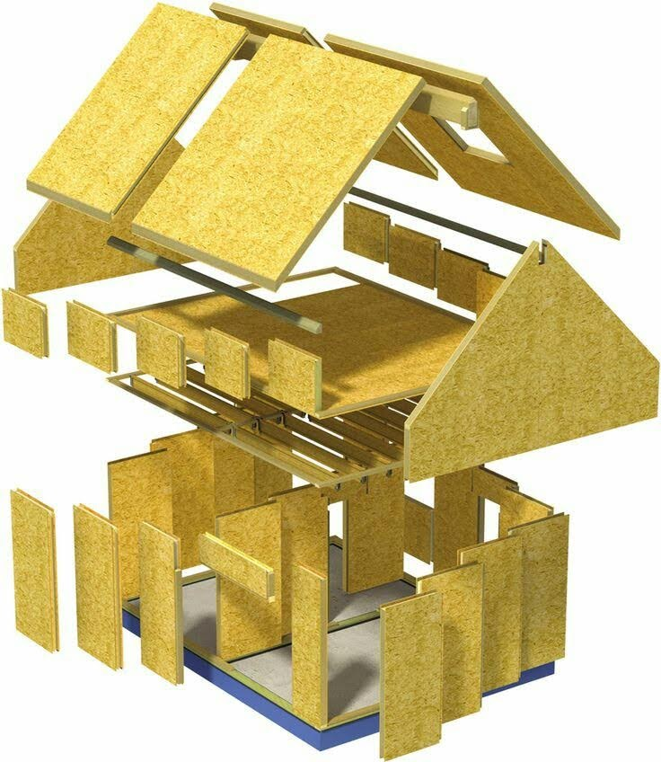
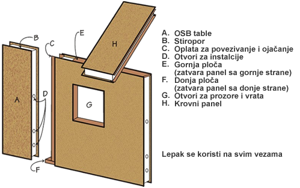
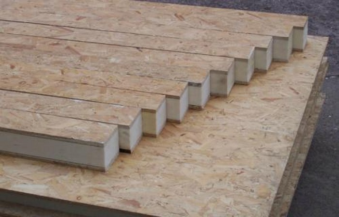
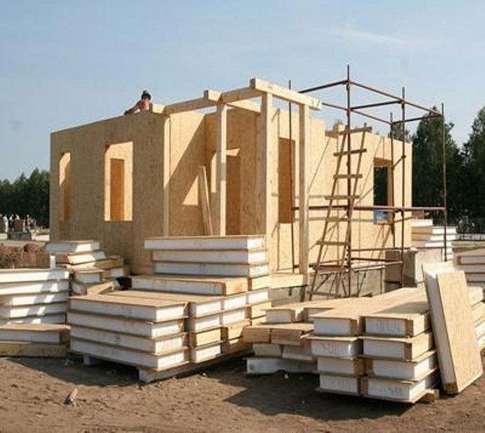

O NAMA
Primarna delatnost preduzeća GencoHome je izgradnja objekata od SIP panela.Imamo mogućnost gradnje Stambenih zgrada, kuća za stanovanje kao i objekata za odmor i rekreaciju, poslovnih zgrada, vrtića i drugih objekata. Naša gradnja se sastoji u nabavci osnovnih materijala od kojih naj pre u proizvodnoj hali vršimo proizvodnju SIP panela. Osnovni materijal je OSB ploča i ekstrudiranog polistirena (stiropora) od kog pravimo sendvič panel –SIP. Nakon izrade SIP panela u dimenzijama objekta za koji su namenjeni po projektu pristupa se gradnji. Osim gradnje objekata bavimo se i uslugama adaptacije i dogradnje već postojećih. U okviru preduzeća bavimo se i uslugama kupoprodaje nekretnina koja nam je omogućila ispitivanje tržišta i plasiranje naših gotovih objekata.
SIP PANELI - Budućnost gradnje
Šta su SIP paneli?
SIP (structural insulated panel) zapravo je termin koji na engleskom govornom području obeležava termoizolacione sendvič panele bilo kog tipa. Medutim, za razliku od našeg tržišta tamo se najcešce odnosi na panele od OSB-a sa ispunom od EPS-a, XPS-a ili poliuretana (nešto poput konstruktivnog "heraklita").
Strukturalno izolacioni paneli su osmišljeni u Americi tridesetih godina dvadesetog veka, a značajno su unapređeni i uspešno praktično primenjeni u prvoj deceniji novog milenijuma u ekstremnim klimatskim i raznovrsnim geografskim uslovima, najpre na zahtevnom kanadskom tržištu, a zatim i širom sveta. SIP paneli materijal budućnosti koji je u Srbiji dostupan tek par godina unazad.To je unapređena vrsta gotovih građevinskih panela za montažnu gradnju sa ugrađenom izolacijom koja nudi sve prednosti multifunkcionalnosti i jednostavnog koristenji uz pouzdanost i sigurnost gradnje
SIP standardi dati su i u Međunarodnom građevinskom propisu (International Building Code, APA, Plywood Design Specification 4—Design & Fabrication of Plywood Sandwich Panels for the design of SIPs). Međutim, ovaj dokument se pre svega odnosi na osnovne mehaničke osobine SIP elemenata ali ne i ostale karakteristike koje proizvođači SIP-a treba da postignu.
U dokumentu 2006 International Residential Code, koji važi od 2007. godine, date su detaljnije specifikacije, ali samo za SIP-ove koji služe za konstrukciju zidova. Kao glavna prednost gradnje SIP-om u odnosu na drvenu ramsku konstrukciju koja se zatim zatvara panelima, termoizolacijom, itd, istice se zaptivenost što u velikoj meri utice na uštede energije tokom životnog veka objekta. Takode, kao i kod metalnih sendvic panela, gradnja drvenim termoizolacionim sendvič panelima brza je i jednostavna.
Šta i kako je SIP panel napravljen?
Reč SIP predstavlja strukturalnu izolacionu ploču. Ovaj građevinski materijal je konstrukcija od tri sloja: dve ploče OSB i sloj ekspandiranog stiropora u sredini. Sa upotrebom poliuretanskog lepka, pod pritiskom od 18 tona, ove komponente su međusobno povezane. Paneli se proizvode u dva tipa: zid i pod.
Tehnologija je u suštini zalepiti između dva lista OSB (orijentirana cjedilu -. Engl OSB) Polistiren blokova PSB-C-25 gdje je C - gašenje, i 25 - gustoća (od 15 do 25 kg / m3). Njegova debljina varira od 100 do 200 mm, zavisno od vrste konstrukcije i klimatske zone u kojoj je postavljena. Takođe, tanji paneli mogu se koristiti za konstrukciju pregrada u kućištu od SIP panela. Na konturi panela nalaze se žljebovi za povezivanje i pričvršćivanje šipki. Mora se reći da je panel sa 100 mm izolacije toplotne provodljivosti odgovaraju na oko metar zida korpulentni pečene gline cigle, ali sada je sadašnji ruski standardi za srednji bend je potrebno 120 mm stiropor. Prema tome, većina proizvođača SIP panela nudi standardne proizvode sa 140 mm PSB- C-25 i debljinom OSB od 10-12 mm.
Drveni termoizolacioni konstruktivni sendvič paneli mogu imati više uloga u konstrukciji objekta - zidovi, podovi, krovovi, pa čak i temeljni zidovi. Takođe, oni predstavljaju i barijeru
Orijentisana ploča (OSB) - 97% materijala je drveno-čips, spojeno u nekoliko slojeva i zalijepljeno zajedno sa raznim smolama. U drvnoj čipsu očuvana su sva korisna svojstva drveta, ali ne postoje razni nedostaci: čvorovi, promena smera vlakna. Za prenos elastičnosti i čvrstoće na ploču, čipovi se postavljaju u različitim pravcima tokom postupka lepljenja, postavljeni su uzdužno u spoljnim slojevima, ukršteni u unutrašnjim slojevima. Zbog takve višesmerne orijentacije, kao i posebnog tretmana koji osigurava otpornost na vodu, otpornost na kalup, gnjavu, ploča postaje idealan građevinski materijal..
Stiropor - nalazi se u sredini CIP panela, 98% se sastoji od vazduha, a preostalih 2% - stirena. Polyfoam je ekološki prihvatljiv i netoksičan materijal, ima dug vijek trajanja, malu težinu, kao i visoke karakteristike toplotne izolacije. Zbog navedenih osobina, materijal je najtraženija izolacija u građevinarstvu.
Glavna svojstva panela:
- veličina - maksimalna visina - 350 cm, širina - od 63 do 150 cm, debljina - 5-23 cm, sve zavisi od toga za šta je panel namenjen, unutrašnji, spoljni ili za preklapanje;
- masa je lagana težina. Na primjer, panel veličine 250x125x18 cm ima težinu od 50 kg. Ukupna težina SIP panela za izgradnju kuće od 150m2. biće 15 tona. Težina cigle, koja će biti potrebna za izgradnju kuće istog područja - 60 tona. Zbog male težine ploča, moguće je značajno uštedjeti prilikom izgradnje temeljnog objekta i pri transportu kupljenog materijala;
- povećana otpornost na opterećenje - materijal ima strukturu od tri sloja, tako da mogu dobro da izdrže uzdužnog opterećenja (10 tona 1kv.m.) i poprečno (2 tone 1kv.m.). Sa vertikalnim savijanjem, jedna od ploča je komprimovana, a druga u ovom trenutku se ispružuje, što obezbeđuje strukturu sa visokom otpornošću na savijanje. Ove karakteristike omogućavaju dizajnu da izdrži jake vetrove vetra, sneg i kišne oluje. Maksimalno dozvoljeno opterećenje koje pod može da izdrži je 150 kg po 1 m2 M;
- visoke toplotne izolacione osobine - ovo uzrokuje nisku toplotnu provodljivost i troslojnu strukturu panela. SIP panel sa debljinom od 12 cm ima iste osobine kao opeka debljine 2 metra ili armiranog betona debljine 4 metra;
- velika otpornost na vatru - ploče se tretiraju posebnom supstancom - zaštitom od požara, što dovodi do samogasnog gašenja požara na površini. Vatrootpornost materijala je 7 puta veća od drveta.
Može se zaključiti da su CIP paneli idealni kao građevinski materijal za montažne kuće.
Pozivitne osobine CIP panela?
Postoje određeni kvaliteti ovog materijala koji određuju njihovu efikasnost i značaj u odnosu na ostale građevinske materijale:
- povećano očuvanje toplote konstrukcije u 1,5-2 puta;
- ubrzana instalacija - kuća "ključ u ruke" biće spremna za 3 mjeseca od početka građevinskih radova;
- jačanje i jačanje strukture zgrade;
- SIP paneli nisu podložni deformaciji tokom rada;
- možete napraviti lagani okvir, jer neko opterećenje će preuzeti sam panel;
- eko materijal - panel je 97% drvenih čipsa, a impregnacije, voskovi, punila i ekspandirani polistiren potpuno su bezopasni za zdravlje;
- paneli su ravni, zahvaljujući ovome možete odmah izvršiti dekoraciju sobe, što će značajno uštedjeti vrijeme i novac, jer nije potrebno izvršiti punilo;
- SIP paneli ne zahtevaju toplotnu izolaciju;
- mala debljina ploče omogućava povećanje korisne površine za skoro 30%.
Proces izgradnje
Montažne kuće, odnosno prefabrikovane kuće, naziv su dobile po svom načinu gradnje. One se grade od montažnih panela, koji se izrađuju u fabrici.
Gotovi paneli transportuju se na gradilište. Tamo se sastavljaju (montiraju) i na taj način se dolazi do gotovog objekta – montažne kuće. Ovi paneli dopremaju se na gradilište potpuno završeni i spremni za montiranje.
Izgradnja kuće uz upotrebu CIP tehnologije zadovoljava sve karakteristike termičke zaštite, trajnosti i pouzdanosti.
Gradnja uz primenu SIP tehnologije omogućava kombinovanu značajnu uštedu u odnosu na klasičnu gradnju i druge načine montažne gradnje u vidu cene materijala, bitnog skraćenja vremena gradnje i smanjenja uloženog rada zbog jednostavnosti upotrebe, i naročito dugoročno zbog budućih nižih troškova zagrevanja, hlađenja i održavanja objekata. Nakon fascinantnih rezultata u pogledu vatro-otpornosti, statičkih karekteristika i energo-efikasnosti SIP panela, naša firma je počela sa projektovanjem i izgradnjom, kako eko-kuća tako i svih ostalih objekata, uključujući i višespratnice.
Dimenzije i težina?
Visina - 3000 mm. Širina je 1250 mm. Debljina zavisi od mesta upotrebe (unutrašnji, spoljašnji zid ili preklapanje) i varira od 60 do 220mm. Panel Težina - 2500h1250h174 je oko 55 kg, što daje veliku prednost u odnosu na druge građevinske materijale, jer je manja težina, manje posebne opreme potrebno je uključiti (dizalice, manipulatori, radnici).
Kakvo opterećenje mogu da izdrže?
SIP označava strukturalnu i izolacionu ploču, a nije slučajno. Panel proizveden u fabrici može izdržati vrlo veliko uzdužno i poprečno opterećenje. Test opterećenja pokazao je da mogu izdržati uzdužno opterećenje do deset tona po metru. To su 5 srednjih vozila. Vertikalno opterećenje (poprečno) - do pet tona po metru.
Energetska efikasnost?
Zbog porozne strukture ekspandiranog polistirena, toplotna provodljivost standardne CIP ploče je debljine 174 mm - 0,035 W / (m · ° C). Za poređenje, kako bi se postigla ova toplotna provodljivost, neophodno je izgraditi zid od opeke debljine 1900 mm, od betona - 2300 mm.
Protivpožarna sigurnost
U proizvodnji OSB ploča, dodatak za plamen (samougasivi element) se dodaje u kompoziciju adheziva, dok se otpornost na paljenje povećava za 7 puta u odnosu na konvencionalno drvo. Testovi su pokazali da površina može izdržati plamen od 900 stepeni više od 10 minuta. Ovaj rezultat se može povećati nekoliko puta. Ako koristite gips karton za unutrašnju dekoraciju, takvi zidovi mogu sadržati plamen za 20-30 minuta.
Ekološka kompatibilnost
OSB je jedan od ekološki prihvatljivih materijala (sastoji se od 95% drveta), a savremeni lepkovi i prirodni voskovi su potpuno sigurni. Što se tiče ekspandiranog stiropora - takođe je bezopasno.
Ako sve ove karakteristike prikupite na jednoj slici, postaje jasno: sip panela je odličan građevinski materijal za privatnu izgradnju stanova.
Tehnologija montaže SIP panela
Povezivanje SIP panela jedni sa drugima vrši se lepljenjem poliuretanske montažne pene sa šipkom, ravnomerno ulazeći u njihove slotove. Panela ploču ili platforma je također prenosi šiljak sistema - Groove sa klin i na dnu odbora rade cantrail odgovarajuće dimenzije.
Donja ploča se naziva i panel za instalaciju. Debljina može biti od 25 mm do 40 mm. Ugaoni spojevi se izvode po istom principu, samo je montažna ploča pričvršćena za vertikalnu ploču.
Po pravilu, njegova debljina je polovina debljine šipke. Pričvršćivanje delova na šavovima najčešće se vrši pomoću šrafova drveta, rijetko - pištolja za pištolj. Dizajn kućišta SIP-a je toliko jak, da je za dno i gornji deo, kao i za uglove, dovoljno ploče od 25 mm.
Najvažnija karakteristika gradnje sip panelima je cena i pristupačnost.
Po našim i proračunima stručnjaka gradnja SIP panelima od klasnične masivne gradnje je povoljnija preko tri puta, dok je od montažne gradnje povoljnija oko 30 %. Kada uvrstimo eksploatacione troškove Sip materijal dolazi do izražaja. Računi za grejanje će vam u proseku biti manji za pedeset posto u odnosu na klasičnu montažnu gradnju, a čak 160 % manji u poređenju sa masivnom gradnjom. Osnovna prednost naših eko kuća je visoka termo otpornost, brza i jednostavna montaža koja se obavlja bez mehanizacije ne remeti prirodu i okolinu, pomoću SIP panela kuću možete sastaviti kao puzle, bez ikakvog stručnog tima za montažu, koristeći samo uputstvo koje su izradili naši inženjeri.
Trospratna konstrukcija napravljena od SIP-a ima zalihu nosivosti tri puta veću od potrebne i izdražava zemljotrese i do sedam stepeni Rihterove skale.